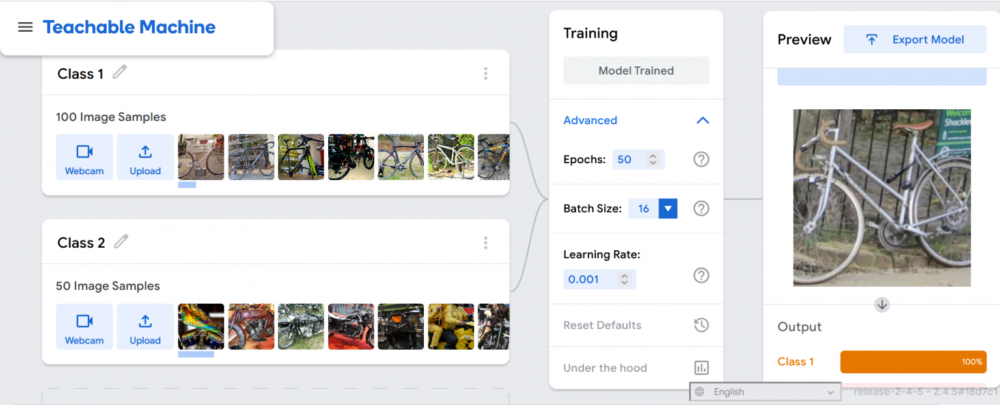
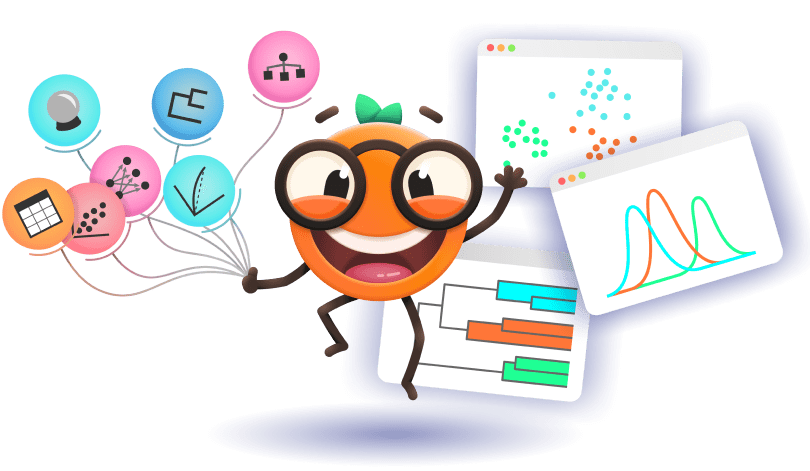

Licenca
To delo je na voljo pod pogoji slovenske licence Creative Commons 2.5:
priznanje avtorstva - nekomercialno - deljenje pod enakimi pogoji.
Celotna licenca je na voljo na spletu na naslovu http://creativecommons.org/licenses/by-nc-sa/2.5/si/. V skladu s to licenco je dovoljeno vsakemu uporabniku delo razmnoževati, distribuirati, javno priobčevati, dajati v najem in tudi predelovati, vendar samo v nekomercialne namene in ob pogoju, da navede avtorja oziroma avtorje in izdajatelja tega dela. Če uporabnik delo predela, kar pomeni, da ga spremeni, preoblikuje, prevede ali uporabi to delo v svojem delu, lahko predelavo dela ponudi na voljo le pod pogoji, ki so enaki pogojem iz te licence oziroma pod enako licenco.

Strojno učenje v praksi
Uporabili bomo Google’s Teachable Machine in z njim naučili stroj, da klasificira sliko bodisi kot kolo ali kot motorno kolo. Spomnimo, da je aplikacije strojnega učenja potrebno naučiti in testirati pred njihovo uporabo v praksi. Zbrali in razvrstili bomo vzorčne primere kategorij, ki jih bo kasneje razvrščal stroj, nato bomo model usposobili (naučili) ter testirali, ali vzorčne slike pravilno kategorizira.

Izvedi naslednja dejanja:
- Prenesi slike koles, ki jih najdeš tukaj.
- Po potrebi prenesi vsebino stisnjene mape (zip) v lokalno mapo na tvojem računalniku. Služila bo za učne podatke aplikaciji strojnega učenja.
- Prenesi slike motornih koles, ki jih najdeš tukaj.
- Po potrebi prenesi vsebino stisnjene mape (zip) v lokalno mapo na tvojem računalniku. Tudi ta vsebina bo služila za učne podatke aplikaciji strojnega učenja.
- Prenesi vse slike, ki jih najdeš tukaj.
- Po potrebi prenesi vsebino stisnjene mape (zip) v lokalno mapo na tvojem računalniku. Služila bo za testne podatke.
- Klikni na Google’s Teachable Machine in izberi Image Project > Standard Image Model.
- Pod Kategorija 1 (Class 1), klikni na: Upload > Choose images from your files > odpri mapo s slikami koles, ki si jo ustvaril(-a) v korakih 1 in 2 in iz nje uvozi shranjene slike.
- Pod Kategorija 2 (Class 2), klikni na: Upload > Choose images from your files > odpri mapo s slikami motornih koles, ki si jo ustvaril(-a) v korakih 3 in 4 in iz nje uvozi shranjene slike.
Izberi Učenje (Training), nato klikni na Učenje modela (Train Model). Model se bo sedaj naučil, kako prepoznati kolesa in motorna kolesa. Počakaj na obvestilo Model naučen / Model usposobljen (Model Trained).
Verjetno boš opazil(-a), da ni potrebno ročno izbirati in vnašati posameznih lastnosti (značilnosti) koles in motornih koles. Algoritmi jih znajo namreč sami poiskati na slikah!

Izvedi naslednja dejanja:
- Pod Predogled (Preview), klikni na puščico poleg spletne kamere (webcam) in izberite vrsto vnosa: Datoteka (File).
- Klikni, da izbereš slike iz datotek na tvojem računalniku (choose images from your files) ter nato izberi testno sliko, izmed slik, ki si jih shranil(-a) v korakih 5 in 6.
- Z miško se premakni navzdol in preveri izhod.
- Ponovi postopek z drugimi slikami ter primerjaj učinek.
Če uporabiš sliko za učenje klasifikatorja, bo stroj že zabeležil ustrezno oznako za dotično sliko. Prikaz te slike stroju v fazi testiranja ne bo omogočil merjenja uspešnosti generalizacije. Zato se morajo učni in testni podatki med seboj razlikovati!
Opomba: Naložiš lahko tudi svoje slike ter z njimi model učiš in testiraš. Tukaj najdeš dober in brezplačen vir najrazličnejših slik.
Rudarjenje podatkov
Znanost o podatkih, zlasti metode strojnega učenja, služijo kot katalizatorji sprememb na različnih področjih, kot so znanost, inženiring in tehnologija, ki pomembno vplivajo na naše vsakdanje življenje. Računalniške tehnike, kot je na primer rudarjenje podatkov (ang. data mining), s katerimi je mogoče presejati obsežne nize podatkov, identificirati zanimive vzorce in konstruirati napovedne modele, postajajo vseprisotne. Vendar ima le nekaj strokovnjakov temeljno razumevanje znanosti o podatkih, še manj jih je aktivno vključenih v izgradnjo modelov iz svojih podatkov. V dobi, ko AI tiho oblikuje naš svet, se morajo vsi zavedati njenih zmogljivosti, prednosti in potencialnih tveganj. Vzpostaviti moramo metode za učinkovito komuniciranje in poučevanje konceptov, povezanih s podatkovno znanostjo, širokemu občinstvu. Načela in tehnike strojnega učenja, znanosti o podatkih in umetne inteligence morajo postati splošno znana.
Rudarjenja podatkov se lahko lotimo tako, da začnemo z vprašanjem, poiščemo ustrezne podatke in nato odgovorimo na vprašanje z iskanjem ustreznih podatkovnih vzorcev in modelov. V projektu Pumice razvijamo izobraževalne aktivnosti, s katerimi lahko obogatimo različne šolske predmete. Uporabljamo podatke, povezane s predmetom, in jih raziskujemo z uporabo AI in pristopov strojnega učenja. V sodelovanju z učitelji smo razvili učne predloge in razlage ozadja za učitelje in učence.
